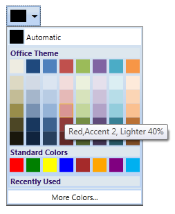

The ToolTip is a small hover box with information about the item on which mouse is being hovered over. This box displays information like the name of the color in the palette along with details of its application.
For Example: The color can be applied to background or text. The variant color percentage difference details can then be obtained from the base colors.
Use Case Scenarios
You can use ToolTip support to know the color name and its variant details.

Figure 199: ColorPickerPalette with Tool Tip support
Sample Link
To view samples:
1. Select Start -> Programs -> Syncfusion -> Essential Studio x.x.xx -> Dashboard.
2. Select Run Locally Installed Samples in WPF Button.
3. Now expand the DragAndDropManagerDemo tree-view item in the Sample Browser.
4. Choose any one of the samples listed under it to launch.